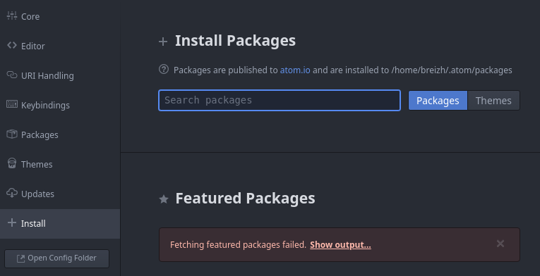
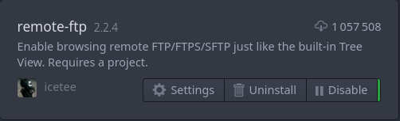
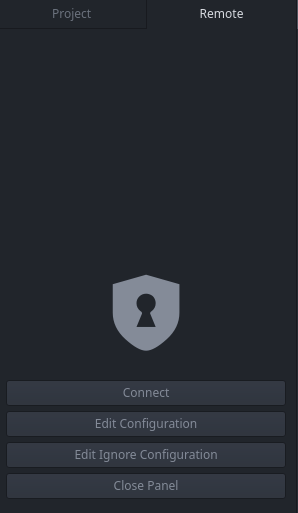

Remote-FTP
Pendant les cours de PHP vous avez marre d'envoyer vôtre public-html ?
Ça vous prend du temps alors que vous avez juste ajouté un point virgules ?
J'ai la solution !
Prérequis
Tout dabort il faut se munir d'atom.
Sous Linux via l'installeur de package et sous Windows via ce lien
Atom téléchargé, il faut maintenant copier public_HTML depuis transit.
Le Package
Une fois atom ouvert il faudra se rendre dans l'installeur de package.
Crtl+, pour acceder aux setting puis cliquez sur "install"

Ensuite installer le package "remote-ftp".

Ça y est ! Le package est installer ! On peut passer a la suite.
La config
Une fois le package installer on peut faire la configuration.
Tout dabort, il faut ouvrire votre dossier de PHP. Pour ça rien de plus simple ! File < Add Project Folder ou Ctrl+Maj+A
Ensuite il faut ouvrire le panneau de remote-ftp.
Pour ça il faut aller dans package < remote-ftp < toggle.

Maintenant, il faut ouvrire le ficher de config.
En mettant la souris tout a gauche, une petite flèche s'afficher. Il faut cliquer dessus puis cliquer sur l'onglet "remote".

Puis ouvrire "Edit config".
Ici il faut copier la config en remplacant [login] par votre login et [chemin] par le chemin absolue de public_HTML sur transit.
Il peut s'obtenir via la commande pwd dans le shell, sinon c'est souvent "/users/info/etu-s3/[login]/public_html".
{
"protocol": "sftp",
"host": "transit.iut2.univ-grenoble-alpes.fr",
"port": 22,
"user": "[login]",
"pass": "pass",
"promptForPass": true,
"remote": "[chemin]",
"local": "",
"agent": "",
"privatekey": "",
"passphrase": "",
"hosthash": "",
"ignorehost": true,
"connTimeout": 10000,
"keepalive": 10000,
"keyboardInteractive": false,
"keyboardInteractiveForPass": false,
"remoteCommand": "",
"remoteShell": "",
"watch": [],
"watchTimeout": 500
}
Vous travaillerez dans "projet" (pour crer, ouvrire, modifier des fichers). Et a chaque enregistrement, il sera mis à jours dans votre public_HTML accesible via http://www-etu-info.iut2.upmf-grenoble.fr/~[login]/